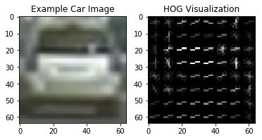
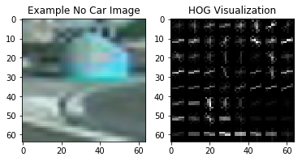
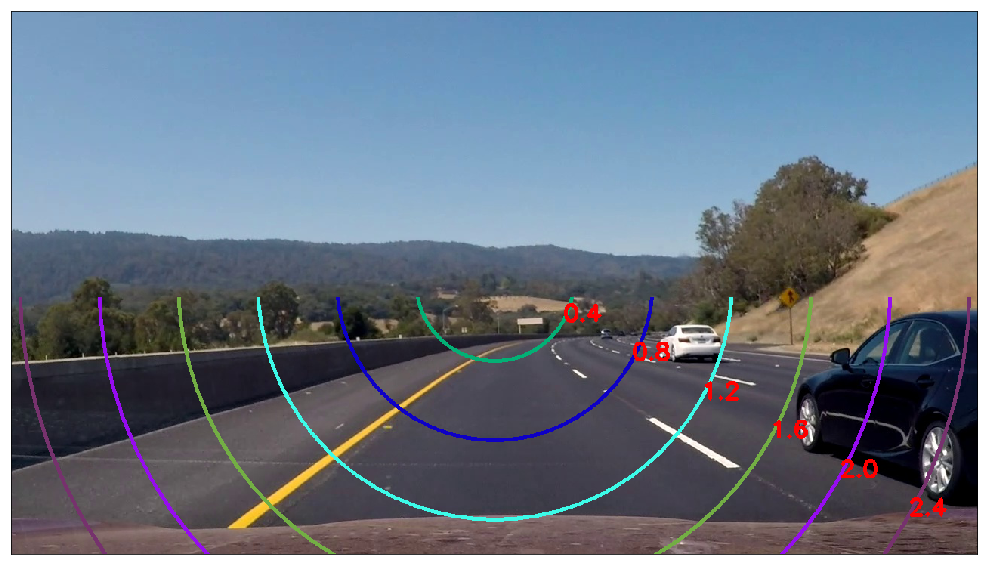
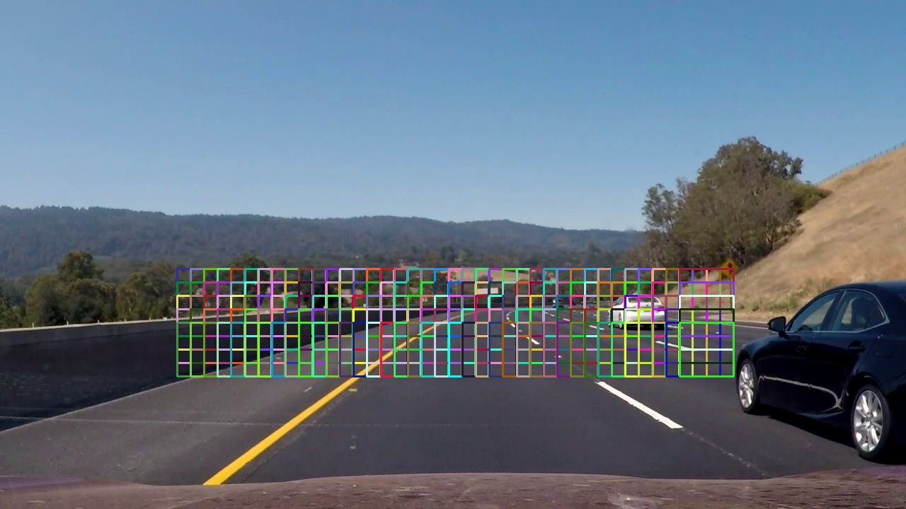
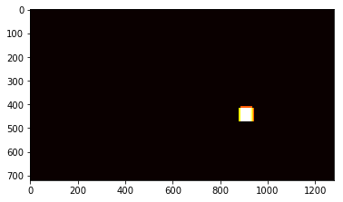
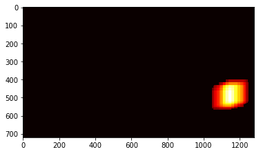
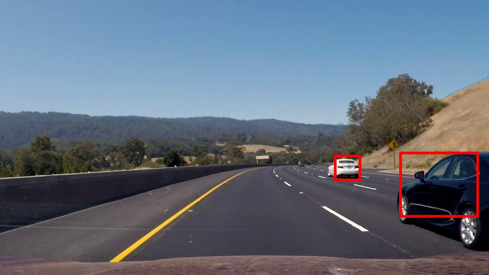

Vehicle Detection Project
The goals / steps of this project are the following:
The code for feature extraction can be found in extract_features, calc_bin_spatial_features and calc_hog_features function in features.py.
2 types of features have been used for describing cars.
64x64 pixel patches are used for extraction.
calc_hog_features function in features.py.skimage.hog() parameters (orientations, pixels_per_cell, and cells_per_block) was done with some trial and error. Since, HOG deals with gradients, it is generally more robust to color spaces.YUV color space and HOG parameters of orientations=9, pixels_per_cell=(8, 8) and cells_per_block=(2, 2) were finally decided on. Here is an example of HOG features on the sample images:
 calc_bin_spatial_features function in features.py.HSV colorspace. The 64x64 patch is scaled down by 2 and all channel values are flattened into a 1D vector.scaler is also fit on the data to be used during prediction.xy_to_scale in detectCars.py. The scale at vanishing point is 0.0, and at the farthest points is 2.8. A sample is shown. This is a continuous function; discrete values shown for illustration.A sliding window search method is used to detect cars. 2 stages are used.
Coarse Search Windows:
The code can be found at coarse_detection in detectCars.py.
We identify 3 areas where cars can be found. The coarse windows are done at 2 scales for each area. These values have been derived by using the function explained above.
The overlap used for the larger areas is 50% and for the smaller central area is 25%.
We are very permissive and do not reject outliers here.
This coarse detection is also run every 3rd frame.
A visualization is shown.
| Left Windows | Center Windows | Right Windows |
|---|---|---|
|  |
Fine Search Windows:
fine_detection in detectCars.py.update in the CarTracker class.scipy.ndimage.measurements.label() is used to identify individual blobs in the heatmap. Our heatmap only has one blob each. Bounding boxes are then constructed around the area of each blob detected. 

The bounding boxes are smooth and fairly consistent. The results look good considering only a low-pass filter is used.
The detection and tracking are done in multiple scales, but in constrained windows around an expected region. This helps provide speedups even with a variety of scales and overlaps.
Each tracked car is assigned a tracker object. The pipeline can be easily multi-threaded as all objects can be tracked independent of each other.
The coarse window search since independent can also be multi-threaded, saving time.
The implementation is based on the GTI and KITTI datasets. It is possible that the dataset is not representative of all types of cars and their orientations. This may result in a not so optimal classifier.
The tracker pipeline could be made more robust by using a Kalman filter or any such tracker/filter. Another approach could be to detect the car and then track it's features using a Lucas-Kanade based methods.
The pipeline does not take cues from the position on the road as of now. The search windows can be adjusted depending on the vehicles position. If we are very close to the center divider, we do not need to search on the left and so on.
I have vectorised as much as I could. All SVM predictions for one ROI are happening as a matrix multiply saving time, but that is not enough to make the pipeline realtime (currently ~5fps).
The HOG feature extraction is currently the bottleneck in the pipeline. It takes an order of magnitude more time compared to everything else. More work is required in making this work at 25-30 fps.